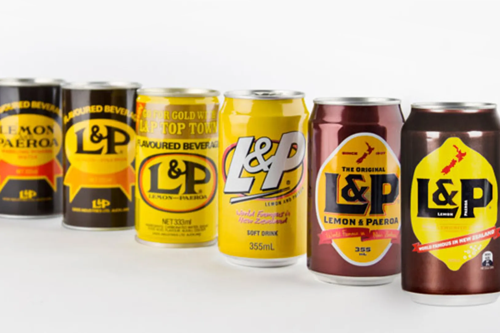
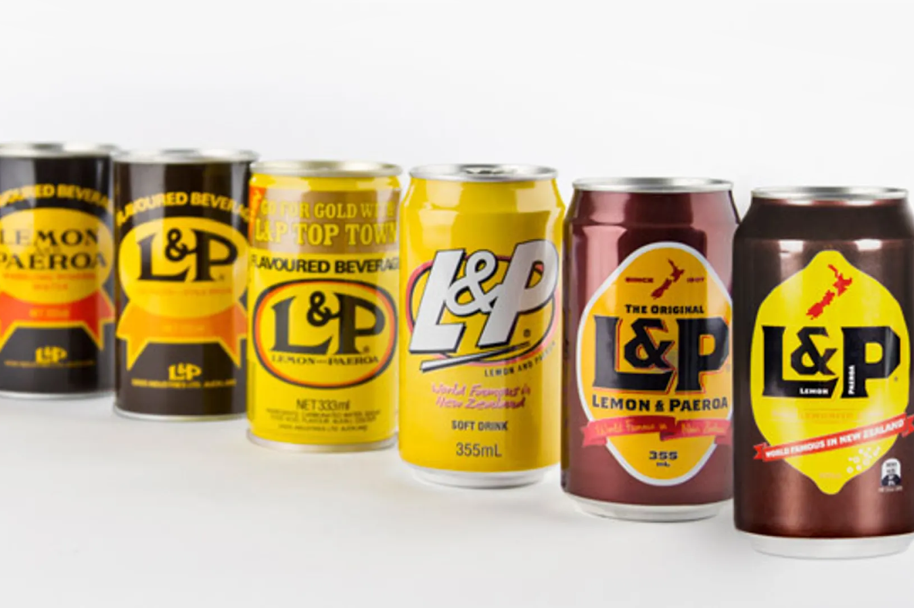

Auckland


Auckland, based around 2 large harbours, is a major city in the north of New Zealand’s North Island. In the centre, the iconic Sky Tower has views of Viaduct Harbour, which is full of superyachts and lined with bars and cafes.
Wellington, the capital of New Zealand, sits near the North Island’s southernmost point on the Cook Strait. A compact city, it encompasses a waterfront promenade, sandy beaches, a working harbour and colourful timber houses on surrounding hills. From Lambton Quay, the iconic red Wellington Cable Car heads to the Wellington Botanic Gardens. Strong winds through the Cook Strait give it the nickname "Windy Wellington."
Tauranga, a metropolitan hub surrounded by beautiful coastline. Go sailing, fishing or dolphin watching and soak up the stunning coastal environment.Tauranga is the largest city in the Bay of Plenty and one of the fastest growing population centres in the country.


 
